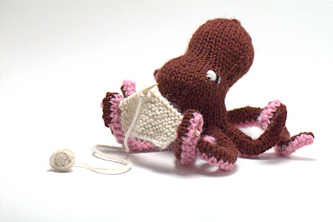
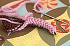
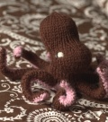
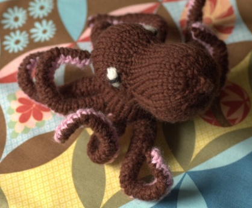

|
||
Premium Patterns Wintry Mix Mitts Love Bytes HawkeyeFree Patterns Kiddie Cadet Summerlin Ruffled Scarf Seamless DS Sock Simply Seamless Pouch Myriads of MushroomsExtras DIY Mitten Blocker Felt Patch Tutorial Yarn Dyeing Tutorial Needle Pouches Knitting Journal |
July 30, 2007 - Posted by Grace SchneblyIn the land of knit toys…… the octopus is king! Well I guess he isn’t exactly a Kraken.  Project Specs I love how this little octopus turned out, and I am sure my sister will like him too. This has to be one of my favorite knit toys that I have ever made because he is just too fun to play with! Usually when I make a toy, I finish it and then set it somewhere so it can be admired, but this octopus has got a lot of play time already. The arms are so fun to pose, and you can make it look like it is doing a million different things. I just hope I don’t wear out the arms before my sisters birthday comes around! Hansi Singh did an amazing job with the design. Everything came together nicely, although the construction was a little complicated. I wouldn’t recommend this pattern for a beginning level knitter, just because there are a lot of different techniques that go into making this guy. You use short row shaping, grafting, whip stitch seaming, picking up stitches, knitting in the round and flat, basic decreases, and M1R and M1L increases. Also it was a bit difficult working with worsted weight yarn on US3 needles, especially at the top of the head. My stitches got pulled a bit too tight, making the fabric a little uneven. I need to learn to loosen up my stitches some when making all those M1 increases. After I finished the tentacle assembly, I wasn’t too happy with how I picked up the stitches around the bottom. Although there weren’t any holes and they were all evenly spaced, some of the joins between the tentacles and the base just looked a little sloppy. However after inserting the pipe clears it became pretty much unoticiable. I think the pipe cleaners are really essential for making this toy awesome. After it was all put together, I was really happy with the end result. The only problem I have with this toy is that it turned out a tad on the small side. When I make this again I am going to use at least a bulky weight yarn. It would probably be awesome out of a super bulky weight yarn like Brown Sheep Burly Spun too. The pattern costs a little bit more than most on Etsy, but you can tell that a lot of work went into the design so it is well worth it. She also has some other really interesting and unique knitting patterns in her shop that I am definitely going to buy. I love the Dumbo Octopus, Nudibranch, Jellyfish, Pufferfish, Baby Elephant… okay I want all of them! Hansi Singh has a seriously awesome understanding of shaping and construction, and her designs really show it. Anyways, if you like to knit toys, marine animals, or both give this pattern a try! I can’t wait to make another one for myself!!!  |
   Recent ReviewsRecent Posts
 Our Favorites
|
| © 2007 KathrynIvy.com | ||
{kind=link}
{kind=link}